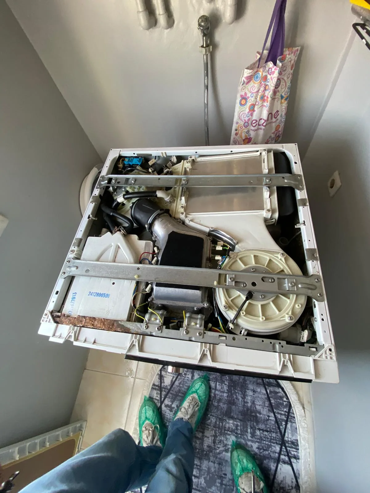
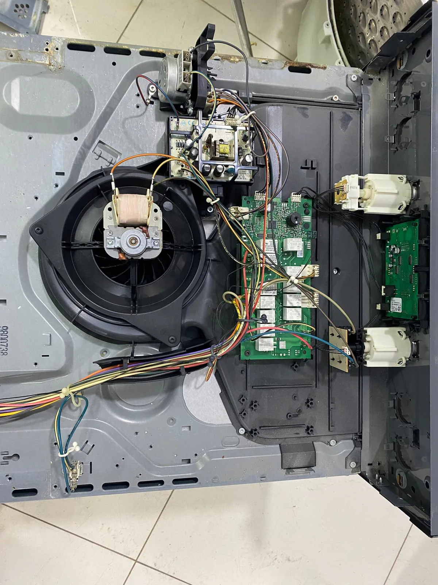
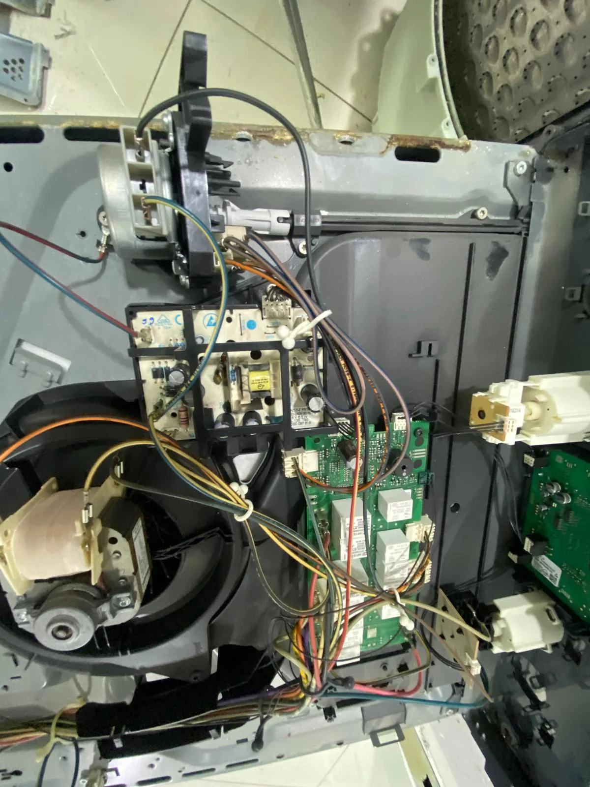

TECHNICAL SUPPORT
Refrigerator Repair
Cooling, overheating, leaks, compressor and control-board issues with technical inspection and repair support.
View service →You can contact us in English and share your appliance type, brand, model and the problem you are experiencing.
Cooling, overheating, leaks, compressor and control-board issues with technical inspection and repair support.
View service →
Not spinning, draining, door, drum, bearing, leak and control-board problems with on-site technical support.
View service →
Leaks, poor washing, spray arm, detergent, drainage and control-board problems with technical service support.
View service →
Not drying, heating, excessive noise, filter and programme issues with technical inspection and repair support.
View service →
Heating, element, thermostat, ignition and control-panel issues with technical diagnosis and support.
View service →
Air-conditioner maintenance, cleaning, performance checks and technical support for suitable faults.
View service →
Technical support for heating, hot water, pressure and general operating problems.
View service →
Cooling, excessive icing, noise and electronic-control problems with technical service support.
View service →Telefon veya WhatsApp üzerinden cihaz türünü, marka-modelini ve arıza belirtisini paylaşabilirsiniz.